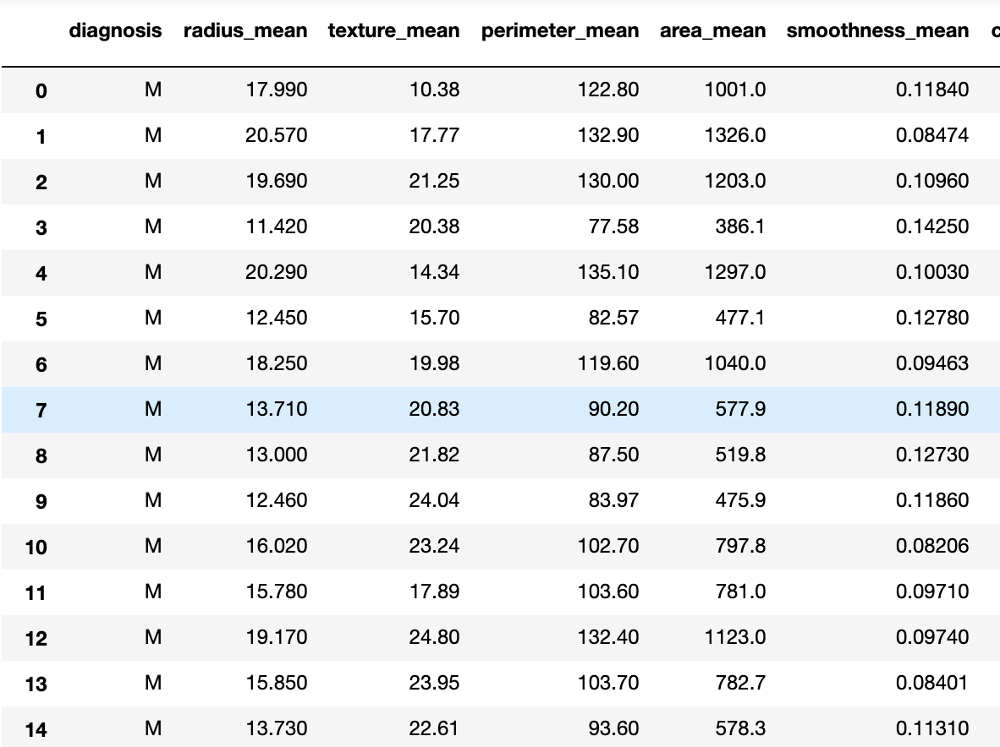
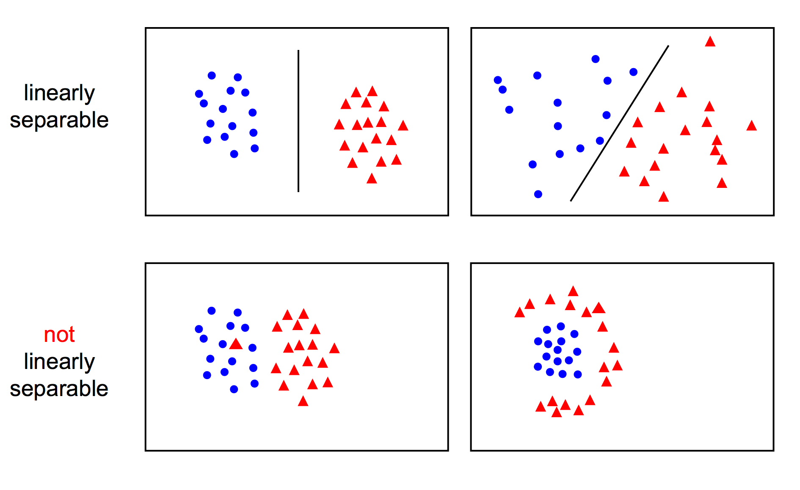
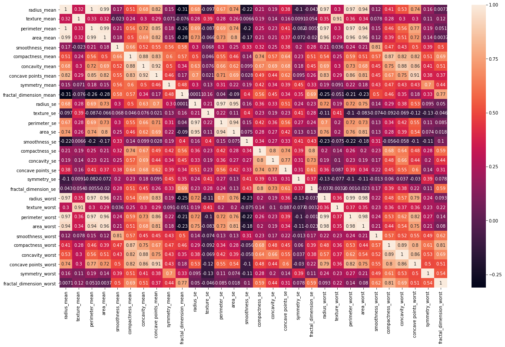
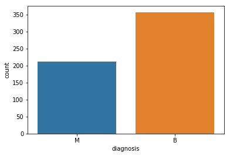
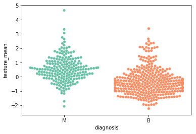
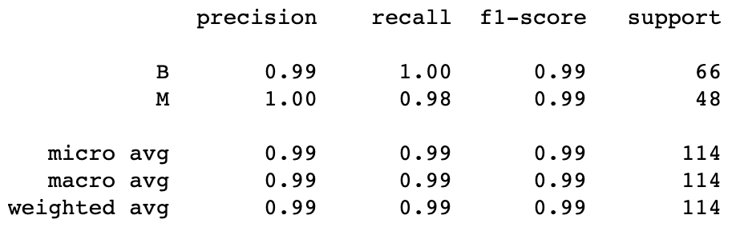
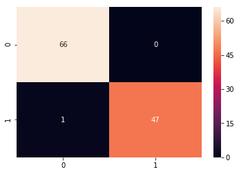

Abstract
Clinical methods like diagnosis for cancer are increasingly integrating Machine Learning techniques. This be crucial in improving factors like early detection and recognition of tumors. The most common kind of cancer affecting women all over world is Breast cancer. The latest statistics show that almost 3.1 million women in the US alone have had a history of breast cancer. Most cases are caused by mutations in the Breast Cancer gene one(BRCA1) and BRCA2 gene. Early diagnosis is key to increasing survival rates.
However, it is currently challenging to classify whether the tumor is malignant or benign. Here is where Machine Learning techniques come into play. ML techniques can help improve classification accuracies in diagnosis and possibly be key to saving more lives. In this project, our main goal is to test certain ML techniques like Support Vector Machine to improve classification accuracy. The characteristics of different cancer cancer cells types will be used to categorize the tumors.
Introduction
Breast cancer incidence is in United States is among the highest numbers. About 12% of women in the United States will develop breast cancer over the course of her lifetime. Hence, it is a research field that has both great value and potential. The current most widely used test are mammograms. Though important, they tend produce lot of false positive results. This can lead to the patient having to undergo unnecessary tests and surgeries. The process is expensive and painful to the patient.
Machine Learning is where computers are fed with data and trained to make decisions based on the information. It is currently a hot field and is being used in industries such as network security, healthcare etc. Using data science and ML techniques in medical fields might be a massive assistance to medical professionals in early detection and classification. This is due to the increasing incidence of breast cancer cases leading to more data being generated in the system. There have been prior potential studies that have shown that ML applications produced promising results. One such tool was developed by Google and helped identify metastatic breast cancer with 99% accuracy. The lymph nodes of the affected cells were analyzed for metastasis. Here, Machine Learning algorithms such as Support Vector Mechanisms(SVMS) and Linear Regression to classify cancers as benign and malignant. Applying ML techniques, we predict that we will have over 90% accuracy rate. Therefore, displaying the crucial nature Machine Learning can play in Great Cancer cancer detection.
Libraries
The visualization and analysis were done in Jupyter Notebooks with the help of modules such as numpy(Numerical Python), scikit-learn and matplotlib.
Dataset
Wisconsin Diagnostic Breast Cancer dataset were applied to ML techniques for training. There were 587 data points. The features of the cells in the dataset that were the following:(1)Radius,(2)perimeter,(3) permimeter, (4)area,(5)smoothness, (6) compactness, (7) concavity, (8) concave points, (9) symmetry, and (10) fractal dimension.

Machine Learning Techniques
Support Vector Machine(SVM):
A SVM is a supervised ML model that can perform linear or non linear classification. It is specifically constructed to minimize generalization errors. It separates the data based on finding the minimum distance of a hyperplane. This “decision boundary” is called the maximum margin hyperplane(MMH). SVMs also include single or hybrid models such as Proximal Support Vector Machine, Linear Programming Support Vector Machine to name a few. SVM are useful because they are effective high dimensional spaces, where the sample number is less than dimensions. It is also know be very memory efficient and versatile due to it’s ability of Kernel function specification.

Model Training
We used the diagnosis(“Y”) feature from the dataset to predict the output. The remaining columns in the dataset like mean radius, mean texture etc are considered predictors. After cleaning the data, we divided the data into subsets of training and testing. The testing model as suggested will measure the performance of the algorithm. Train_test_split modules are imported from the Scikit learn library and we split the data into 20% for training and 80% for testing. Next using the same sklearn library, we import the Support Vector Machine(SVM) modules and fit our model. A confusion matrix(another module) is used to asses the accuracy of the prediction model.
Results
From our original dataset we see that there were more Benign(357) tumors than Malignant. Without doing any data cleanup, correlation between different features of tumor cells was immediately observed in the heat map. The mean texture of the malignant cells were more distorted than benign ones. After training and testing the model and running it through our SVM algorithm, we can see that our model an excellent job with it’s predictions. It predicted that returned only false positive and rest of the data was reflected our prediction. The SVM model returned a 99% accuracy and 100% precision rate for malignant tumors.



Conclusion
Through this project, SVM was tested as potential ML method for breast cancer detection. The results and prediction obtained were very promising. We propose that SVM could become a popular tool for detecting breast cancer. This model especially when combined with neural networks got help medical professional diagnose cancer more efficiently. All the ML techniques such as SVM should aid existing tests like mammograms and ultrasound to improve accuracy. Cancer genomic database is increasing ass the new sequencing technologies emerge. Machine Learning algorithms are perfectly suited to play a vital role analyzing these complex set of datas. New cancer targets for drugs can be developed with increasing more involvement of Machine Learning.


 Abstract
Introduction
Methods
Libraries
Dataset
SVM
Abstract
Introduction
Methods
Libraries
Dataset
SVM